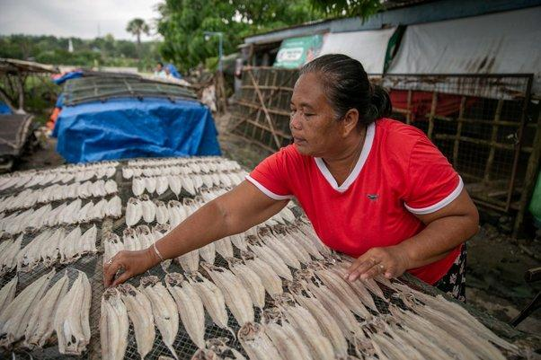
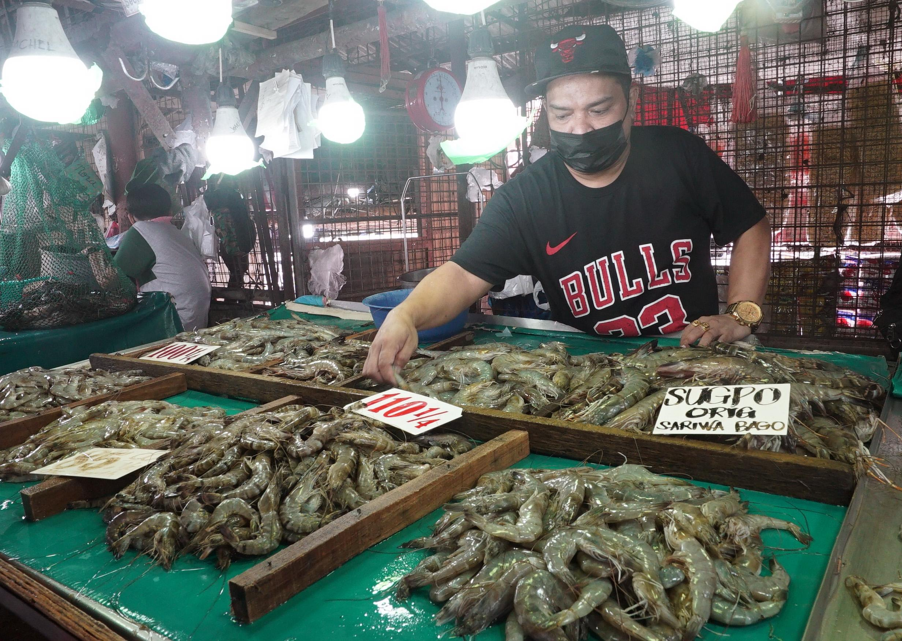
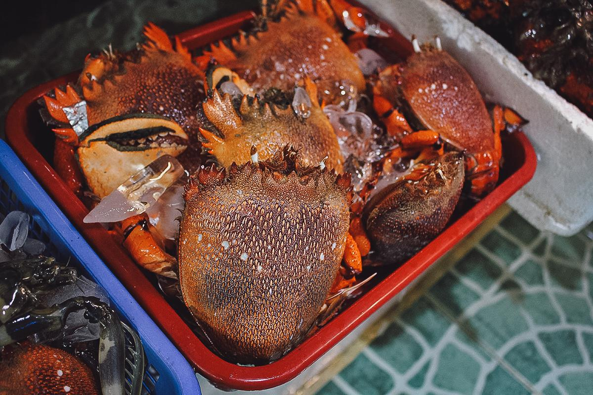
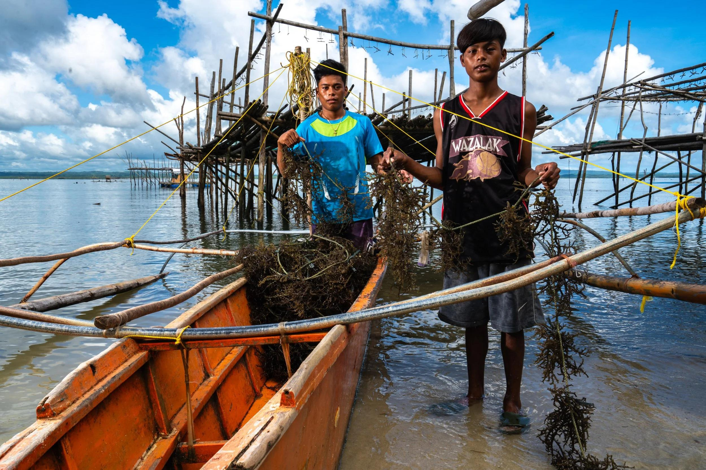
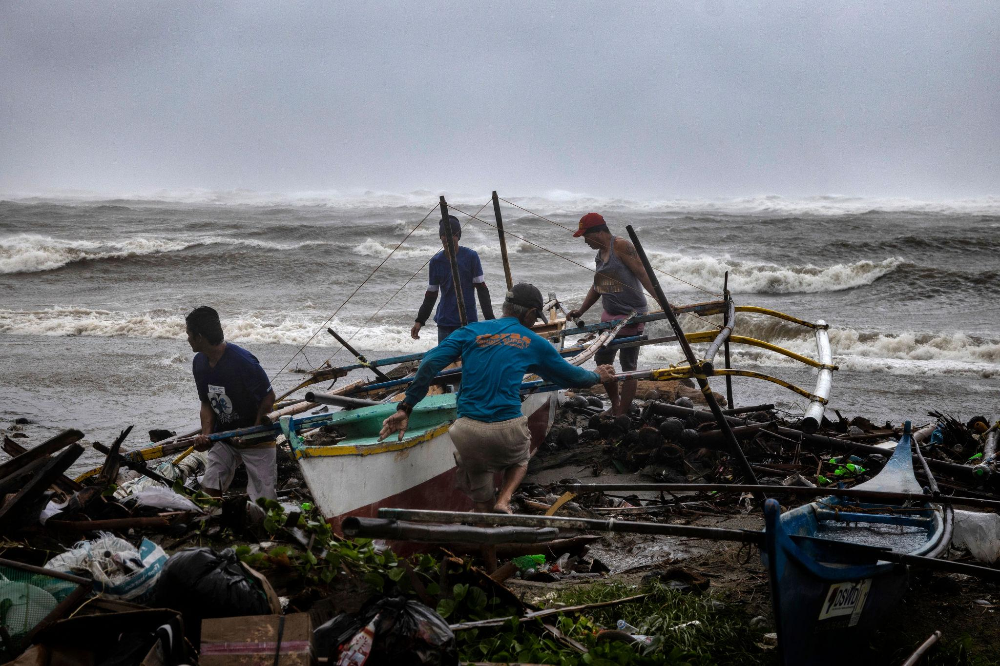
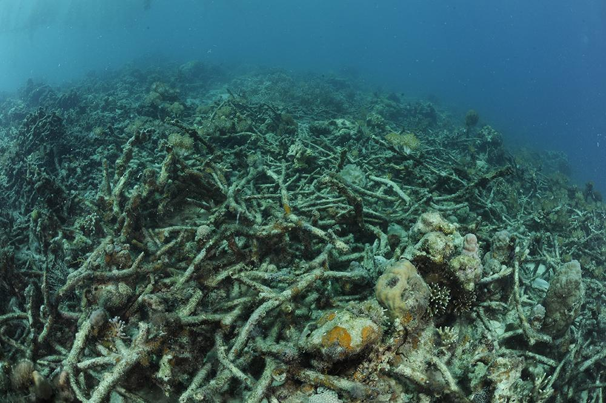
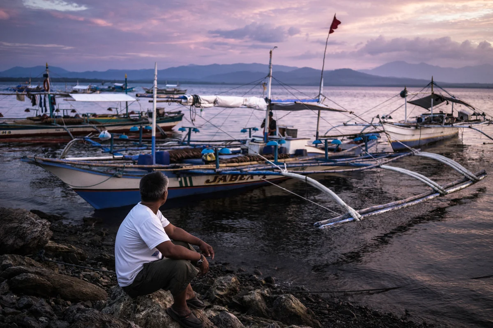

Fisheries refer to the activities involved in catching, harvesting, breeding, and raising fish and other aquatic organisms for food, livelihood, trade, and economic development. It includes municipal fishing, commercial fishing, inland fisheries, and aquaculture, such as fish farming and seaweed cultivation.

Philippine fisheries play an important role in providing food, supporting coastal communities, and sustaining the country's economy. From the rich waters of the archipelago to inland fishing communities, fisheries remain an essential part of Filipino life and culture.

Early Filipinos depended on fishing as an important source of food and livelihood. They used traditional fishing methods such as hook-and-line fishing, fish traps, nets, spears, and boats. Coastal communities also developed fishing and trading practices that supported their daily lives.

During the Spanish colonial period, fishing remained an important source of food and livelihood. Coastal communities continued their traditional fishing practices, while fish preservation methods such as drying, salting, and fermentation became important ways of storing and trading fish.

During the American period, the fishing industry gradually developed through improved fishing techniques, fish preservation, and commercial fishing activities. Government initiatives and institutions also contributed to the development of fisheries education, research, and resource management.

After World War II, the Philippine fishing industry continued to expand through the introduction of motorized fishing boats, improved fishing equipment, and larger commercial fishing operations. Fishpond aquaculture also developed, particularly in the production of milkfish (bangus) and other aquatic products.

In the modern era, the Philippine fisheries sector became more regulated through the Philippine Fisheries Code of 1998 (Republic Act No. 8550). It was amended by Republic Act No. 10654 in 2015 to strengthen the fight against illegal, unreported, and unregulated fishing and promote the sustainable management and protection of aquatic resources.


Fisheries provide an important source of protein, vitamins, minerals, and essential nutrients for millions of Filipinos. Fish and other seafood products are common parts of the Filipino diet, helping meet daily nutritional needs and providing an affordable source of healthy food. A stable fish supply also helps strengthen the country's food security.
The fisheries industry provides income and employment opportunities for millions of people, including municipal and commercial fishermen, fish farmers, fish vendors, fish processors, and seafood distributors. It also supports other related jobs, such as boat building, fishing equipment production, transportation, and seafood retail, helping families sustain their daily needs.
The Philippines earns foreign income through the international sale of seafood products such as tuna, seaweed, shrimp, crabs, and processed fish. These exports help strengthen international trade, support local seafood businesses, and create employment opportunities in processing and packaging industries. They also promote Philippine seafood products in the global market.
Fisheries encourage the responsible use, protection, and conservation of the country's aquatic resources. Sustainable fishing practices, marine protected areas, and proper fisheries management help preserve fish populations, coral reefs, mangroves, and other important marine habitats. These efforts maintain biodiversity and ensure that future generations can continue benefiting from the country's rich aquatic resources.



The Philippines produces a wide variety of fish and aquatic products that contribute to food security, livelihood, and economic growth. Some of its major products include tuna, sardines, mackerel, and galunggong, as well as freshwater fish such as tilapia and catfish. The country also produces shrimp, crabs, squid, oysters, mussels, and seaweed, which are used for local consumption and export. These resources are also processed into dried fish, smoked fish, canned sardines, fish sauce (patis), and bagoong. These products support fishing communities, provide income for workers, and strengthen the country's fisheries industry.












Overfishing: Excessive fishing and unsustainable harvesting reduce fish populations and threaten the long-term availability of aquatic resources.
Illegal, Unreported, and Unregulated Fishing: Destructive fishing practices and unauthorized fishing activities damage marine ecosystems and reduce the income of legitimate fishermen.


Climate Change: Rising ocean temperatures, coral bleaching, stronger typhoons, and changing marine conditions affect fish populations and fishing activities.
Marine Pollution: Plastic waste, industrial chemicals, oil spills, and improper waste disposal contaminate aquatic environments and threaten marine life.


Habitat Destruction: The destruction of coral reefs, mangroves, and seagrass beds reduces the natural breeding and feeding grounds of fish and other marine organisms.
Low Income and Poverty: Many small-scale fishermen experience unstable earnings due to fluctuating fish catches, rising fuel prices, limited equipment, and dependence on middlemen.


Limited Technology and Infrastructure: Some fishing communities lack access to modern fishing equipment, cold storage facilities, proper ports, and efficient transportation systems, resulting in post-harvest losses.